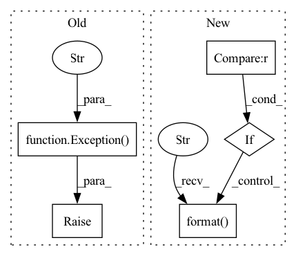

Pattern ID :24941
Before Change
raise Exception("Not implemented.")
def initCheckpoint(self):
raise Exception("Not implemented." )
def initScheduler(self):
self.scheduler = torch.optim.lr_scheduler.StepLR(self.optimizer, self.conf.lr_step,self.conf.lr_factor)
After Change
raise Exception("Not implemented.")
def initCheckpoint(self, map_location=None):
if not self.conf.checkpoint_suffix or self.conf.checkpoint_suffix == "" :
LOG.logI("Omit the checkpoint file since not specified...")
return
LOG.logI("Load checkpoint from {} folder".format(self.output_dir))
self.net.load_state_dict(torch.load(self.output_dir+"/model:{}".format( conf.checkpoint_suffix) , map_location=map_location))
self.optimizer.load_state_dict(torch.load(self.output_dir+"/optimizer:{}".format(conf.checkpoint_suffix), map_location=map_location))
def initScheduler(self):In pattern: SUPERPATTERN
Frequency: 3
Non-data size: 5
Instances Fragment ID: 76747187
Project Name: deepvac/deepvac
Commit Name: 9304f1ffdc78155cd509dcd3c94ebcbe4df4db7e
Time: 2020-08-14
Author: gemfield@civilnet.cn
File Name: lib/syszux_deepvac.py
M Class Name: DeepvacTrain
N Class Name: DeepvacTrain
M Method Name: initCheckpoint(2)
N Method Name: initCheckpoint(1)
M Parent Class: Deepvac
N Parent Class: Deepvac
M File Name: lib/syszux_deepvac.py
N File Name: lib/syszux_deepvac.py
M Start Line: 227
M End Line: 228
N Start Line: 227
N End Line: 233
Before Change
except Exception as e:
cnt += 1
if cnt >= 5:
raise Exception(f"Cannot Connect To NTP Server: {ntp_server_url}" )
@staticmethod
def get_instance(args):
if MLOpsRuntimeLog._log_sdk_instance is None:After Change
except Exception as e:
cnt += 1
time.sleep(1)
if cnt >= 3 :
logging.info("Cannot Connect To NTP Server: {}, details: {}".format( ntp_server_url,
traceback.format_exc()) )
break
return 0
Fragment ID: 76747191
Project Name: fedml-ai/fedml
Commit Name: 223a1f9874c1eb0af7bc4ec925cbaaa3199902bc
Time: 2023-03-23
Author: alexliang.kh@gmail.com
File Name: python/fedml/core/mlops/mlops_runtime_log.py
M Class Name: MLOpsRuntimeLog
N Class Name: MLOpsRuntimeLog
M Method Name: get_ntp_offset(1)
N Method Name: get_ntp_offset(1)
M Parent Class:
N Parent Class:
M File Name: python/fedml/core/mlops/mlops_runtime_log.py
N File Name: python/fedml/core/mlops/mlops_runtime_log.py
M Start Line: 107
M End Line: 110
N Start Line: 103
N End Line: 114
Before Change
except Exception as e:
cnt += 1
if cnt >= 5:
raise Exception(f"Cannot Connect To NTP Server: {ntp_server_url}" )
@staticmethod
def get_instance(args):
if MLOpsRuntimeLog._log_sdk_instance is None:After Change
except Exception as e:
cnt += 1
time.sleep(1)
if cnt >= 3 :
logging.info("Cannot Connect To NTP Server: {}, details: {}".format( ntp_server_url,
traceback.format_exc()) )
break
return 0
Fragment ID: 76747188
Project Name: fedml-ai/fedml
Commit Name: e04ac2384189c3ffb8ea27b34e86c16cf605728c
Time: 2023-03-23
Author: alex.gpt.llm@gmail.com
File Name: python/fedml/core/mlops/mlops_runtime_log.py
M Class Name: MLOpsRuntimeLog
N Class Name: MLOpsRuntimeLog
M Method Name: get_ntp_offset(1)
N Method Name: get_ntp_offset(1)
M Parent Class:
N Parent Class:
M File Name: python/fedml/core/mlops/mlops_runtime_log.py
N File Name: python/fedml/core/mlops/mlops_runtime_log.py
M Start Line: 107
M End Line: 110
N Start Line: 103
N End Line: 114